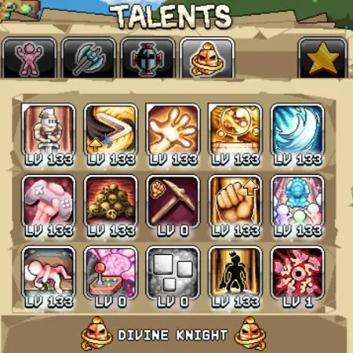
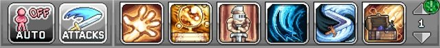
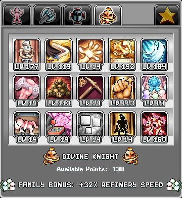
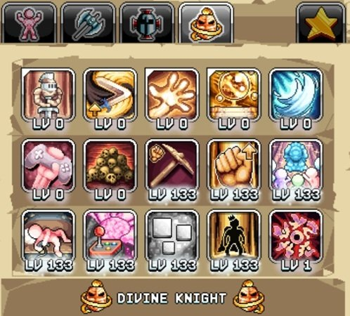
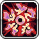
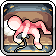
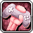
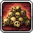
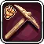

번역 안내. 클래스·스킬·탤런트 이름 등 고유명사는 인게임 검색을 위해 영어 그대로 두었고, 설명만 한글로 옮겼습니다.

Divine Knight 데미지 빌드 (AFK 및 Active)


이 Divine Knight 데미지 빌드는 AFK(방치) 및 Active(직접 플레이) 전투 모두를 위해 설계되었습니다. 다만 가능하면 Active 플레이가 권장되는데, 더 빠른 맵 진행, 크리스탈 몬스터 드랍, 그리고 King of the Remembered 탤런트를 통한 프린터 출력 보너스를 위한 Orb of Remembrance 처치 수 생성이 가능하기 때문입니다. Active 플레이의 경우, 공격 바는 Squire와 Divine Knight 옵션에서 3개의 범위 공격을 포함해 왼쪽에서 오른쪽 순서로 시전을 우선시합니다.
데미지 탤런트 우선순위:

| 탤런트 | 효과 | 설명 |
|---|---|---|
| Divine Intervention | 활성 상태에서 화면의 모든 적이 죽으면 즉시 부활시킴. 또한 치명타 데미지 +% | Divine Knight Active 플레이의 핵심으로, 맵을 클리어한 몇 초 후 몬스터를 부활시킵니다. 비교적 작고 평평한 맵에서 가장 효과적입니다. 추가 포인트는 낮은 우선순위의 치명타 데미지를 제공하므로 탤런트 포인트 1개면 충분합니다. |
 Orb of Remembrance Orb of Remembrance |
처치 수에 따라 Active 경험치 및 드롭률 +%. 레벨이 높아질수록 오브 지속시간 증가 | Active DK에 매우 중요합니다. 레벨이 높을수록 지속시간이 늘어나고 경험치/드랍률 증가폭도 커집니다. Active 전투를 위해 이 탤런트를 최대화하여 결국 100% 가동 시간을 달성하세요(탤런트 레벨 300+). 초기에는 프린터 출력 보너스를 위해 처치 수 100,000을 목표로 하세요. |
| Imbued Shockwaves | 창으로 기본 공격 시 일정 확률로 충격파 발사 | 마나 비용 없이 범위 공격이 가능한 최고의 Divine Knight 공격 탤런트입니다. 데미지량은 Squire의 Shockwave Slash 탤런트를 기반으로 하므로, 그것도 최대화해야 합니다. |
 Knightly Disciple Knightly Disciple |
충격파를 발생시켜 데미지를 주는 기사 제자를 소환 | 평평한 맵에 이상적이며, 레벨 167에서 100% 가동 시간을 달성합니다. Voidwalker의 Enhancement Eclipse가 지속시간에 20초를 추가합니다. |
 Mega Mongorang Mega Mongorang |
Daggerang의 크기가 +% 커지고 여러 몬스터를 타격 | 긴 쿨다운과 높은 마나 비용으로 가장 약한 DK 공격 탤런트입니다. 평평하지 않은 맵에서 가치가 올라갑니다. |
 Symbols Of Beyond ~R |
레벨 1 이상인 모든 탤런트에 레벨 보너스 부여 (20레벨마다 보너스 증가) | 우선순위 탤런트와 핵심 Squire 탤런트를 강화합니다. Divine Knight로 전직 시 탤런트 포인트 1개를 투자할 수 있습니다. |
| King of the Remembered | Orb of Remembrance로 처치한 누적 처치 수 10의 거듭제곱마다 프린터 출력 +% | 많은 Idleon 목표에 유용합니다. 최대 효과를 위해 두 번째 Squire에서 최대화하는 것을 고려하세요. |
 Undying Passion |
AFK 획득 청구 시 Gaming AFK 진행도를 얻을 확률 +% (사탕 제외) | 추가 Gaming 진행은 계정 전체 부스트를 위한 슈퍼비트 업그레이드를 잠금 해제합니다. |
| Overblown Testosterone | STR +% 및 Fist of Rage 최대 탤런트 레벨 증가 | 데미지 출력과 연금술 버블 머니 획득을 위한 주요 힘 원천입니다. |
 Gamer Strength |
Gaming 10레벨마다 무기 파워 증가 | Gaming 레벨이 쌓이면 전투 빌드에 추가 데미지를 제공합니다. |
 Charred Skulls |
1,000 STR당 처치당 처치 수 +% | 새 맵 진입과 Death Note 처치 수를 늘리는 데 도움을 주는 마지막 주요 전투 탤런트입니다. |
| The Family Guy | 표시된 가족 보너스보다 +% 더 큰 가족 보너스 | Divine Knight 가족 정제소 속도 보너스를 증가시킵니다. 다른 모든 탤런트를 최대화한 후에 유용합니다. |
Divine Knight Gaming 빌드
Gaming 빌드는 이전 클래스의 채광 스킬 프리셋과 결합됩니다. World 5 스킬인 Gaming 가든을 열기 전에 이 탤런트 프리셋으로 전환하여 획득량을 최대화하세요.
Gaming 탤런트 우선순위:
| 탤런트 | 효과 | 설명 |
|---|---|---|
| King of the Remembered | Orb of Remembrance로 처치한 누적 처치 수 10의 거듭제곱마다 프린터 출력 +% | 스킬 빌드에서 AFK할 때 프린터 출력을 극대화하는 것은 계정 진행에 매우 중요합니다. Active 오브 처치 수가 쌓인 후 최대화하세요. |
| Bitty Litty | Gaming 레벨당 비트 획득 +% | Gaming 레벨과 함께 스케일링되는 비트 획득의 중요한 증가원입니다. |
| 1000 Hours Played | 모든 캐릭터의 Gaming 경험치 +% | 초기 Gaming 레벨 획득에 유용한 탤런트로, 이후 Bitty Litty를 강화합니다. |
| Symbols Of Beyond ~R | 레벨 1 이상인 모든 탤런트에 레벨 보너스 부여 (20레벨마다 보너스 증가) | 모든 다른 탤런트를 강화하여 Gaming 및 채광 획득에 효과적인 증가를 제공합니다. |
| Undying Passion | AFK 획득 청구 시 Gaming AFK 진행도를 얻을 확률 +% | 추가 AFK 시간을 제공하여 Gaming 진행 속도를 향상시킵니다. |
 Skill Strengthen |
STR가 스킬 효율에 더 큰 영향을 줌. 또한 STR 증가 | 이전 클래스들의 채광 특기를 바탕으로 채광 효율을 향상시킵니다. |
| Overblown Testosterone | STR +% 및 Fist of Rage 최대 탤런트 레벨 증가 | Skill Strengthen을 강화하고 전반적인 채광 효율을 위한 추가 힘을 제공합니다. |
| The Family Guy | 표시된 가족 보너스보다 +% 더 큰 가족 보너스 | 최대화하면 추가적인 정제소 염 속도를 제공합니다. |